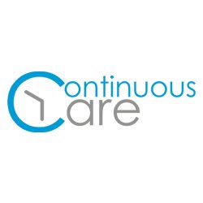

ad>

Shein SHEIN is an international B2C fast fashion brand. The company mainly focuses on women's wear, but it also offers men's apparel, children's clothes, accessories, shoes, bags and other fashion items. SHEIN mainly targets Europe, America, Australia, and the Middle East along with other consumer markets. The brand was founded in October 2008, and since then it has upheld the philosophy that "everyone can enjoy the beauty of fashion." Its business covers more than 220 countries and regions around the world.

Continous Care A web and mobile application for health providers and organizations to engage with patients and manage their business. With built-in capabilities to support your practice's needs, the Virtual Practice® sets your business up for greater success.

Grammarly Quizlet is a multi-national American company which creates and designs tools used for studying and learning.

GrabGrab Holdings Inc., commonly known as Grab, is a Singaporean multinational company headquartered in Singapore. In addition to transportation, the company offers food delivery and digital payments services via a mobile app.